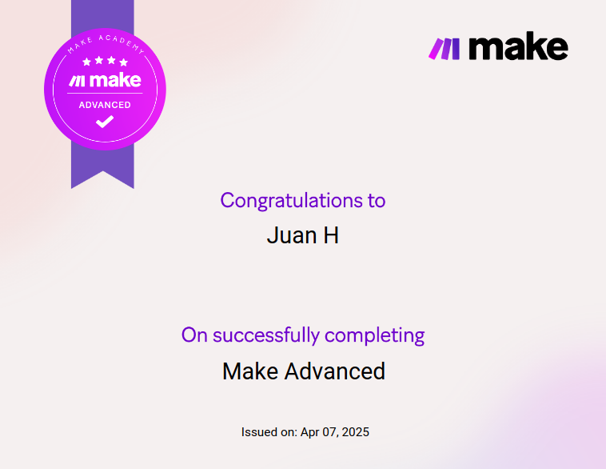
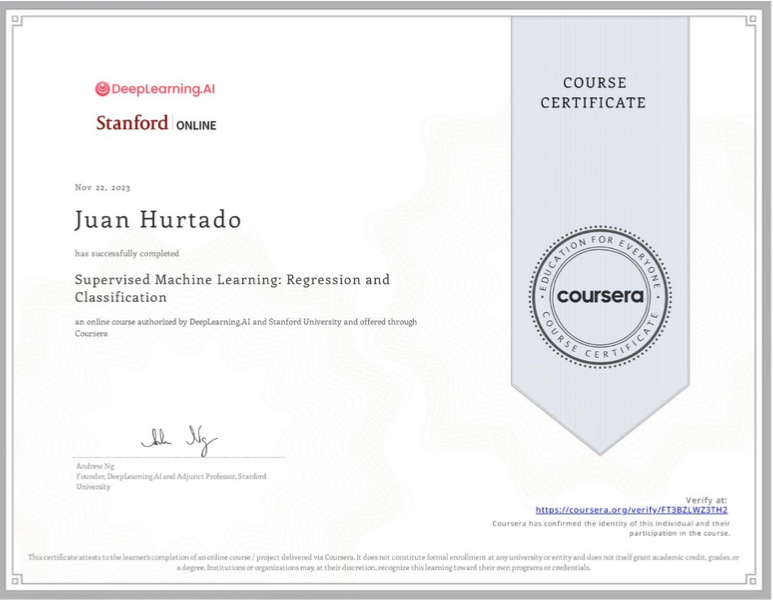
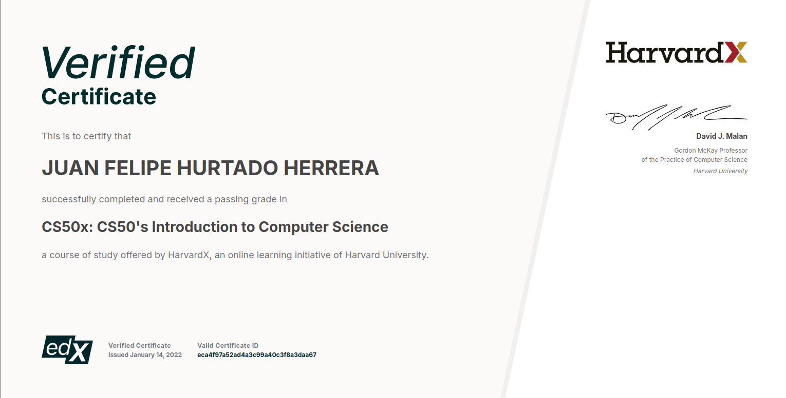
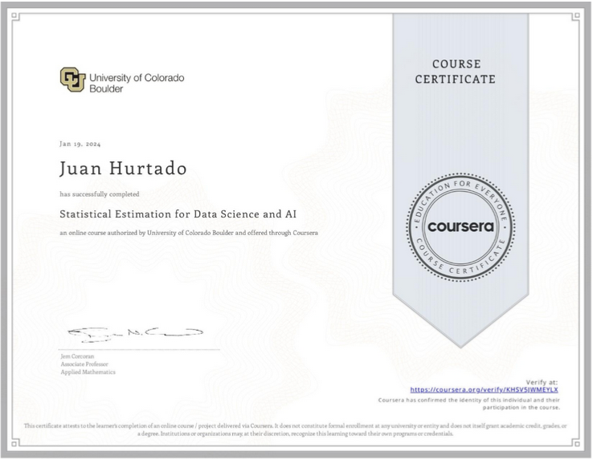
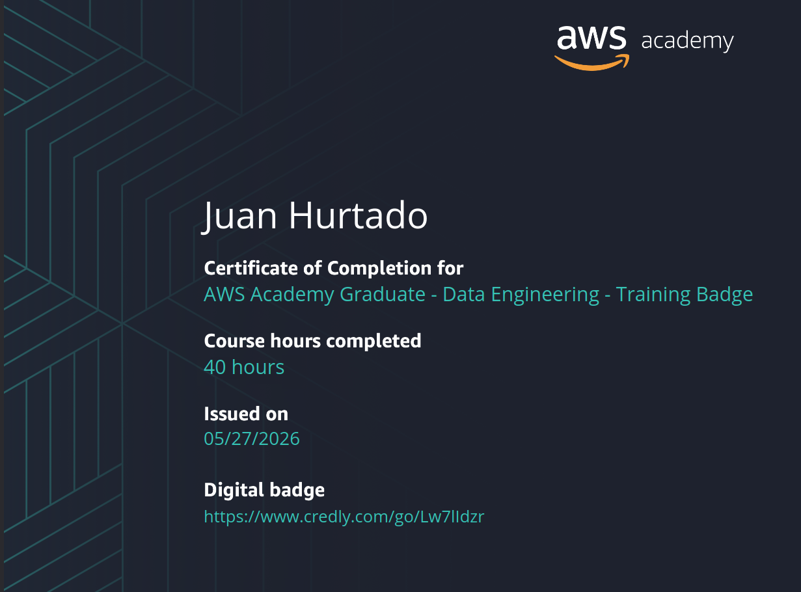

n8n · GoHighLevel · AI Orchestration · Python. 7 years of software dev means I write code when no-code isn't enough.
The tools I use daily. What I actually build with each one.
Architecture decisions, real results, built for scale.
Video agency spending 3-4 hours per project on manual stock footage and reference clip research. 15-20 videos/month meant up to 80 hours of pure research work.
Two-phase n8n system. Phase 1: GPT-4o breaks the script into visual moments and generates platform-specific queries. Phase 2: parallel searches across Pexels, YouTube, and TikTok with an AI query enhancer that rewrites each query per platform before hitting the APIs.
3-4 hours of research per video reduced to 4 minutes. Triggered by a single ClickUp status change. Editor receives a formatted Google Sheet with every clip organized by scene.
Support team spending 20-30 minutes per ticket searching through docs spread across Google Drive. Docs constantly updated, answers going stale.
Document indexing pipeline with recursive chunking and Pinecone for production-scale semantic retrieval. AI agent in Slack with conversation memory. Bot cites its source or says it doesn't know. No hallucination.
20-30 minutes per ticket down to under 10 seconds. Document updates picked up automatically on the next pipeline run. Zero manual knowledge base maintenance.
Course creator guessing content topics with no data. Team spending 4-6 hours per week on manual YouTube research, insights getting lost in someone's notes.
Parallel research from SerpAPI and YouTube Data API, pattern analysis with Gemini, and a gap analysis prompt specifically designed to find high-demand/low-supply topics, not just what's already crowded.
4-6 hours of manual research replaced by a full content brief delivered to Slack every Monday morning. Script outline, titles, SEO description, and tags generated automatically per opportunity.
Finding quality Upwork clients manually takes 2-3 hours a day. Reading postings, checking client history, writing proposals from scratch. Every single day.
4-stage Python pipeline: Apify scrapes jobs and pulls hidden client data (spend, hire rate, avg rating). A scoring engine 0-100 drops anything below 35 before I ever see it. Surviving jobs land in a local Kanban. Moving a card to review sends the full job + client data to Claude, which flags red/green signals and writes a tailored proposal referencing the specific tech stack.
2-3 hours of daily scouting down to 2 minutes of review. Built with modular Python, local SQLite, and a market intelligence layer that tracks which skills pay most that week.
Students split their attention between listening and taking notes, and end up doing neither well. Existing apps record audio but don't understand it.
Full Flutter app, one codebase for iOS and Android, with background audio recording, a Smart Notebook canvas, and Gemini processing the full class audio after. Automatic task detection, quiz generation, PDF export. The hard engineering problem: running audio capture and canvas rendering simultaneously without draining the battery.
Live on App Store and Google Play on a freemium model. Gemini returns full transcripts segmented into summary, glossary, highlights, and auto-extracted tasks from what the professor said.
Businesses add leads to their CRM and then someone has to manually follow up, check if they booked, send reminders, and brief the rep before the call. Four or five tasks that nobody automates.
Three GHL workflows chained together. Workflow 1: AI generates a personalized outreach email based on the contact's industry and sends it with a booking link. Workflow 2: when a call is booked, AI writes a lead briefing for the rep with likely pain points and suggested opening questions. Workflow 3: confirmation, 24h reminder, 1h reminder, and a post-call nudge if the rep forgets to update the pipeline.
New lead arrives, gets a personalized AI email, books a call, rep gets a briefing, prospect gets reminders, pipeline updates itself. Zero manual follow-up at any stage.
My proven 6-phase process for successful automation projects.
Mapping the chaos & understanding what actually needs to be automated.
Architecting the optimal solution before writing a single node.
Implementing the automation with edge cases handled from day one.
Rigorous validation, including the edge cases you didn't think of.
Going live with monitoring in place so nothing breaks silently.
Continuous improvement as your business scales and needs evolve.

Make Academy

DeepLearning.AI · Stanford

HarvardX

University of Colorado Boulder

AWS Academy
Most automation freelancers connect tools. I architect systems. Software development background, not Zapier tutorials.
With 7+ years of programming experience and 5+ years in automation, I build systems that scale beyond simple integrations. Whether it's custom Python logic, AI agents with RAG, or complex CRM pipelines, I deliver robust solutions.
Fluent in English, Spanish & French. I specialize in long-term partnerships with agencies and SaaS companies.
A quick introduction to who I am and how I can help you.
Click below to invite me to a job. I'll show you exactly how to automate it with a clear plan.